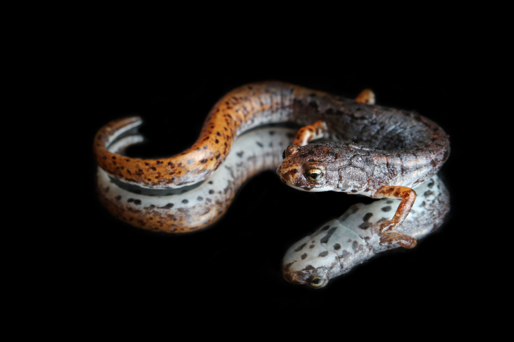

Landscape genetics
I study how landscape features like forests, valleys, and roads affect gene flow and connectivity. Specifically, I am interested in how spatial replication can help make landscape genetics more applicable in conservation management.